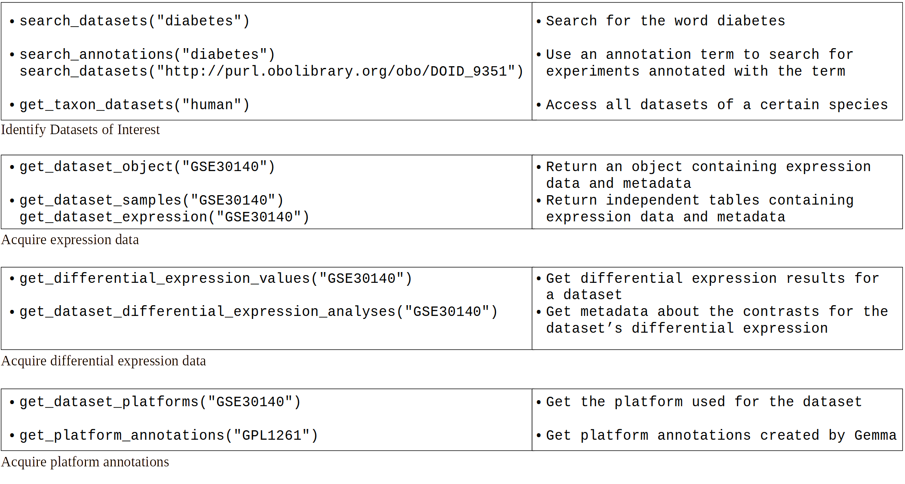

Accessing curated gene expression data with GemmaPy¶
About Gemma¶
Gemma is a web site, database and a set of tools for the meta-analysis, re-use and sharing of genomics data, currently primarily targeted at the analysis of gene expression profiles. Gemma contains data from thousands of public studies, referencing thousands of published papers. Every dataset in Gemma has passed a rigorous curation process that re-annotates the expression platform at the sequence level, which allows for more consistent cross-platform comparisons and meta-analyses.
For detailed information on the curation process, read this page or the latest publication.
Package cheat sheet¶
{kind=link}
Installation instructions¶
The package requires Python3.6+.
Install it from a local copy
git clone git@github.com:PavlidisLab/gemmapy.git cd gemmapy pip install .
Install it from PyPI
pip install gemmapy
Additional packages¶
For the purpose of making plots in this tutorial the following packages should be installed
and imported: matplotlib, plotnine, pandas, seaborn, statsmodels.
Searching for datasets of interest in Gemma¶
The package includes various functions to search for datasets fitting desired criteria.
All datasets belonging to a taxon of interest can be accessed by using get_taxon_datasets() while the function search_datasets() can be used to further limit the results by a specified query containing key words, experiment names or ontology term URIs
>>> import gemmapy
>>> api_instance = gemmapy.GemmaPy()
>>> # all human datasets
>>> api_response = api_instance.get_taxon_datasets(taxon = 'human')
>>> api_response.data[0] # view the object structure
>>> for d in api_response.data[0:6]:
... print(d.short_name, d.name, d.taxon.common_name)
GSE2018 Human Lung Transplant - BAL human
GSE4036 perro-affy-human-186940 human
GSE3489 Patterns of gene dysregulation in the frontal cortex of patients with HIV encephalitis human
GSE1923 Identification of PDGF-dependent patterns of gene expression in U87 glioblastoma cells human
GSE361 Mammary epithelial cell transduction human
GSE492 Effect of prostaglandin analogs on aqueous humor outflow human
>>> # human datasets mentioning bipolar
>>> api_response = api_instance.search_datasets(['bipolar'],taxon = 'human')
>>> for d in api_response.data[0:6]:
... print(d.short_name, d.name, d.taxon.common_name)
GSE5389 Adult postmortem brain tissue (orbitofrontal cortex) from subjects with bipolar disorder and healthy controls human
GSE4030 bunge-affy-arabi-162779 human
GSE5388 Adult postmortem brain tissue (dorsolateral prefrontal cortex) from subjects with bipolar disorder and healthy controls human
GSE7036 Expression profiling in monozygotic twins discordant for bipolar disorder human
McLean Hippocampus McLean Hippocampus human
McLean_PFC McLean_PFC human
>>> # ontology term URI for the bipolar disorder
>>> api_response = api_instance.search_datasets(['http://purl.obolibrary.org/obo/DOID_3312'], # ontology term URI for the bipolar disorder
... taxon = 'human')
>>> for d in api_response.data[0:6]:
... print(d.short_name, d.name, d.taxon.common_name)
GSE5389 Adult postmortem brain tissue (orbitofrontal cortex) from subjects with bipolar disorder and healthy controls human
GSE5388 Adult postmortem brain tissue (dorsolateral prefrontal cortex) from subjects with bipolar disorder and healthy controls human
GSE7036 Expression profiling in monozygotic twins discordant for bipolar disorder human
McLean Hippocampus McLean Hippocampus human
McLean_PFC McLean_PFC human
stanley_feinberg Stanley consortium collection Cerebellum - Feinberg human
Note that a single call of these functions will only return 20 results by default and a 100 results maximum, controlled by the limit argument. In order to get all available results, offset argument should be used to make multiple calls.
To see how many available results are there, you can look at the output objects where apart from the data, additional information from the API response is appended.
>>> # a quick call with a limit of 1 to get the result count
>>> api_response = api_instance.get_taxon_datasets(taxon = 'human', limit = 1)
>>> print(api_response.total_elements)
5766
Since the maximum limit is 100 getting all results available will require multiple calls.
>>> count = api_response.total_elements
>>> data = []
>>> for ofs in range(0,count,100):
... api_response = api_instance.get_taxon_datasets(taxon = 'human',offset = ofs, limit = 100)
... data += api_response.data
>>> print(len(data))
5766
>>> for d in data[0:6]:
... print(d.short_name, d.name, d.taxon.common_name)
GSE2018 Human Lung Transplant - BAL human
GSE4036 perro-affy-human-186940 human
GSE3489 Patterns of gene dysregulation in the frontal cortex of patients with HIV encephalitis human
GSE1923 Identification of PDGF-dependent patterns of gene expression in U87 glioblastoma cells human
GSE361 Mammary epithelial cell transduction human
GSE492 Effect of prostaglandin analogs on aqueous humor outflow human
See Larger queries section for more details. To keep this vignette simpler we will keep using the first 20 results returned by default in examples below.
Information provided about the datasets by these functions include details about the quality and design of the study that can be used to judge if it is suitable for your use case. For instance geeq.q_score_public_batch_effect field will be set to -1 if Gemma’s preprocessing has detected batch effects that were unable to be resolved by batch correction and bio_assay_count field will include the number of samples used in the experiment.
>>> api_response = api_instance.get_taxon_datasets(taxon = 'human')
>>> for d in api_response.data:
... if(d.geeq is not None and d.geeq.q_score_public_batch_effect != -1 and d.bio_assay_count>4):
... print(d.short_name, d.name, d.taxon.common_name)
GSE2018 Human Lung Transplant - BAL human
GSE4036 perro-affy-human-186940 human
GSE3489 Patterns of gene dysregulation in the frontal cortex of patients with HIV encephalitis human
GSE1923 Identification of PDGF-dependent patterns of gene expression in U87 glioblastoma cells human
GSE361 Mammary epithelial cell transduction human
GSE492 Effect of prostaglandin analogs on aqueous humor outflow human
GSE713 UV radiation-induced DNA damage human
GSE833 Amyotrophic lateral sclerosis human
GSE420 Aortic stiffness human
GSE430 Effect of left ventricular assist device support on congestive heart failure patients human
GSE675 Time course analysis of response to HCMV infection human
GSE712 CVB3-infected HeLa cells (multiple time points) human
GSE701 Transcriptional response of lymphoblastoid cells to ionizing radiation human
GSE685 DACH1 inhibits TGF-beta signaling through binding Smad4 human
GSE593 Uterine Fibroid and Normal Myometrial Expression Profiles- U133 Arrays human
GSE837 angiogenesis human
GSE590 USF1 haplotype comparison human
GSE755 MRI lytic and no lytic lesions human
GSE994 Effects of cigarette smoke on the human airway epithelial cell transcriptome human
GSE846 Conversion human
Gemma uses multiple ontologies when annotating datasets and using the term URIs instead of free text to search can lead to more specific results.
The search_annotations() function allows searching for annotation terms that might be relevant to your query.
>>> api_response = api_instance.search_annotations(['bipolar'])
>>> for d in api_response.data[0:6]:
... print(d)
{'category': None, 'category_uri': None, 'value': 'Bipolar', 'value_uri': None}
{'category': 'disease',
'category_uri': 'http://www.ebi.ac.uk/efo/EFO_0000408',
'value': 'bipolar I disorder',
'value_uri': 'http://purl.obolibrary.org/obo/DOID_14042'}
{'category': 'disease',
'category_uri': 'http://www.ebi.ac.uk/efo/EFO_0000408',
'value': 'Bipolar Disorder',
'value_uri': 'http://purl.obolibrary.org/obo/DOID_3312'}
{'category': 'disease',
'category_uri': 'http://www.ebi.ac.uk/efo/EFO_0000408',
'value': 'bipolar II disoder',
'value_uri': 'http://www.ebi.ac.uk/efo/EFO_0009964'}
{'category': 'disease',
'category_uri': 'http://www.ebi.ac.uk/efo/EFO_0000408',
'value': 'Bipolar depressed',
'value_uri': None}
{'category': 'disease',
'category_uri': 'http://www.ebi.ac.uk/efo/EFO_0000408',
'value': 'bipolar disorder not otherwise specified ',
'value_uri': ''}
Downloading expression data¶
Upon identifying datasets of interest, more information about specific ones can be requested. In this example we will be using GSE46416 which includes samples taken from healthy donors along with manic/euthymic phase bipolar disorder patients.
The data associated with specific experiments can be accessed by using get_datasets_by_ids().
>>> data = api_instance.get_datasets_by_ids(['GSE46416']).data[0]
>>> print(data.short_name,data.name, data.id)
GSE46416 State- and trait-specific gene expression in euthymia and mania 8997
To access the expression data in a convenient form, you can use
get_dataset_object(). It is a high-level wrapper
that combines various endpoint calls to return an anndata (Annotated Data) object of the
queried dataset for downstream analyses. They include the expression
matrix along with the experimental design, and ensure the sample names
match between both when transforming/subsetting data.
>>> import gemmapy
>>> api_instance = gemmapy.GemmaPy()
>>> adata = api_instance.get_dataset_object("GSE46416")
>>> print(adata)
AnnData object with n_obs × n_vars = 21986 × 32
obs: 'GeneSymbol', 'GeneName', 'NCBIid'
var: 'batch', 'disease'
uns: 'title', 'abstract', 'url', 'database', 'accession', 'GemmaQualityScore', 'GemmaSuitabilityScore', 'taxon'
To show how subsetting works, we’ll keep the “manic phase” data and the
reference_subject_roles, which refers to the control samples in Gemma
datasets.
>>> # Check the levels of the disease factor
>>> adata.var['disease'].unique()
array(['reference_subject_role', 'euthymic_phase_|_Bipolar_Disorder_|',
'bipolar_disorder_|_manic_phase_|'], dtype=object)
>>> # Subset patients during manic phase and controls
>>> manic=adata[:,(adata.var['disease'] == 'reference_subject_role') |
... (adata.var['disease'] == 'bipolar_disorder_|_manic_phase_|')].copy()
>>> print(manic)
AnnData object with n_obs × n_vars = 21986 × 21
obs: 'GeneSymbol', 'GeneName', 'NCBIid'
var: 'batch', 'disease'
uns: 'title', 'abstract', 'url', 'database', 'accession', 'GemmaQualityScore', 'GemmaSuitabilityScore', 'taxon'
>>> print(manic.var)
batch disease
Control,1_DE50 Batch_05_24/11/10 reference_subject_role
Control,12 Batch_02_26/11/09 reference_subject_role
Control,9 Batch_01_25/11/09 reference_subject_role
Bipolardisorderpatientmanicphase,5 Batch_05_24/11/10 bipolar_disorder_|_manic_phase_|
Control,15 Batch_02_26/11/09 reference_subject_role
Bipolardisorderpatientmanicphase,31 Batch_04_02/12/09 bipolar_disorder_|_manic_phase_|
Bipolardisorderpatientmanicphase,29 Batch_03_27/11/09 bipolar_disorder_|_manic_phase_|
Bipolardisorderpatientmanicphase,35 Batch_04_02/12/09 bipolar_disorder_|_manic_phase_|
Bipolardisorderpatientmanicphase,18 Batch_02_26/11/09 bipolar_disorder_|_manic_phase_|
Control,8 Batch_01_25/11/09 reference_subject_role
Control,3 Batch_05_24/11/10 reference_subject_role
Control,2_DE23 Batch_05_24/11/10 reference_subject_role
Control,2_DE40 Batch_01_25/11/09 reference_subject_role
Bipolardisorderpatientmanicphase,33 Batch_04_02/12/09 bipolar_disorder_|_manic_phase_|
Control,4 Batch_05_24/11/10 reference_subject_role
Control,1_DE62 Batch_01_25/11/09 reference_subject_role
Bipolardisorderpatientmanicphase,10 Batch_01_25/11/09 bipolar_disorder_|_manic_phase_|
Bipolardisorderpatientmanicphase,37 Batch_04_02/12/09 bipolar_disorder_|_manic_phase_|
Bipolardisorderpatientmanicphase,23 Batch_03_27/11/09 bipolar_disorder_|_manic_phase_|
Bipolardisorderpatientmanicphase,16 Batch_02_26/11/09 bipolar_disorder_|_manic_phase_|
Bipolardisorderpatientmanicphase,21 Batch_03_27/11/09 bipolar_disorder_|_manic_phase_|
Let’s take a look at sample to sample correlation in our subset.
>>> # get expression data frame
>>> import pandas as pd
>>> import seaborn as sns
>>> df = pd.DataFrame(manic.X)
>>> df.columns = manic.var.index
>>> corrs = df.corr()
>>> sns.clustermap(corrs)
>>> plt.savefig('ded.png')
{kind=link}
Gene expression distributions of bipolar patients during manic phase and controls.
You can also use get_dataset_expression() to only get the expression
matrix, and get_dataset_design() to get the experimental design matrix.
Platform Annotations¶
Expression data in Gemma comes with annotations for the gene each
expression profile corresponds to. Using the
get_platform_annotations() function, these
annotations can be retrieved independently of the expression data,
along with additional annotations such as Gene Ontology terms.
Examples:
>>> import gemmapy
>>> import pandas
>>> api_instance = gemmapy.GemmaPy()
>>> api_response = api_instance.get_platform_annotations('GPL96')
>>> with pandas.option_context('display.max_rows', None, 'display.max_columns', None): print(api_response[:6])
ProbeName GeneSymbols GeneNames \
0 211750_x_at TUBA1A|TUBA1C tubulin alpha 1a|tubulin alpha 1c
1 216678_at NaN NaN
2 216345_at ZSWIM8 zinc finger SWIM-type containing 8
3 207273_at NaN NaN
4 216025_x_at CYP2C9 cytochrome P450 family 2 subfamily C member 9
5 218191_s_at LMBRD1 LMBR1 domain containing 1
GOTerms GemmaIDs \
0 GO:0005737|GO:0000166|GO:0051234|GO:0005856|GO... 172797|360802
1 NaN NaN
2 GO:0043170|GO:1990234|GO:0044260|GO:0050789|GO... 235733
3 NaN NaN
4 GO:0005737|GO:0072330|GO:0008203|GO:0008202|GO... 32964
5 GO:0043170|GO:0016192|GO:0051234|GO:0044260|GO... 303717
NCBIids
0 7846|84790
1 NaN
2 23053
3 NaN
4 1559
5 55788
>>> api_response = api_instance.get_platform_annotations('Generic_human')
>>> with pandas.option_context('display.max_rows', None, 'display.max_columns', None): print(api_response[:6])
ProbeName GeneSymbols \
0 LCN10 LCN10
1 STAG3L5P STAG3L5P
2 LOC101059976 LOC101059976
3 GAB3 GAB3
4 LOC100287155 LOC100287155
5 RASSF2 RASSF2
GeneNames \
0 lipocalin 10
1 stromal antigen 3-like 5 pseudogene
2 arf-GAP with GTPase, ANK repeat and PH domain-...
3 GRB2 associated binding protein 3
4 hypothetical protein LOC100287155
5 Ras association domain family member 2
GOTerms GemmaIDs NCBIids
0 GO:0005576|GO:0005488|GO:0110165|GO:0036094 441399 414332
1 NaN 8799043 101735302
2 NaN 8779607 101059976
3 GO:0002573|GO:0032502|GO:0030225|GO:0002521|GO... 389635 139716
4 NaN 8090381 100287155
5 GO:0048585|GO:0005737|GO:0043170|GO:0048584|GO... 201914 9770
If you are interested in a particular gene, you can see which
platforms include it using
get_gene_probes(). Note that functions to
search gene work best with unambigious identifiers rather than symbols.
>>> # lists genes in gemma matching the symbol or identifier
>>> api_response = api_instance.get_genes(['Eno2'])
>>> api_response.data[0] # view the object structure
>>> for d in api_response.data: print("%s %-18s %6d %-30s %-10s %2i %s" %
>>> (d.official_symbol,d.ensembl_id,d.ncbi_id,d.official_name,
>>> d.taxon.common_name,d.taxon.id,d.taxon.scientific_name))
...
ENO2 ENSG00000111674 2026 enolase 2 human 1 Homo sapiens
Eno2 ENSMUSG00000004267 13807 enolase 2, gamma neuronal mouse 2 Mus musculus
Eno2 ENSRNOG00000013141 24334 enolase 2 rat 3 Rattus norvegicus
ENO2 None 856579 phosphopyruvate hydratase ENO2 yeast 11 Saccharomyces cerevisiae
eno2 ENSDARG00000014287 402874 enolase 2 zebrafish 12 Danio rerio
>>> # ncbi id for human ENO2
>>> probs=api_instance.get_gene_probes(2026)
>>> probs.data[0] # view the object structure
>>> # print only fields of interest
>>> for d in probs.data[0:6]:
... print("%-10s %-12s %-20s %s %s %s %s" %
... (d.name,d.array_design.short_name,d.array_design.name,d.array_design.taxon.common_name,
... d.array_design.taxon.id,d.array_design.technology_type,d.array_design.troubled))
20016 GPL3093 LC-25 human 1 TWOCOLOR False
20024 GPL3092 LC-19 human 1 TWOCOLOR False
20024 lymphochip-2 Lymphochip 37k human 1 TWOCOLOR False
1639 GPL962 CHUGAI 41K human 1 TWOCOLOR False
35850 NHGRI-6.5k NHGRI-6.5k human 1 TWOCOLOR False
201313_at GPL96 Affymetrix GeneChip Human Genome U133 Array Set HG-U133A human 1 ONECOLOR False
Differential expression analyses¶
Gemma contains precomputed differential expression analyses for most
of its datasets. Analyses can involve more than one factor, such as
“sex” as well as “disease”. Some datasets contain more than one
analysis to account for different factors and their interactions. The
results are stored as resultSets, each corresponding to one factor (or
their interaction). You can access them using
get_differential_expression_values(). From here on, we can
explore and visualize the data to find the most
differentially-expressed genes.
Note that get_differential_expression_values can return multiple differentials per study if a study has multiple factors to contrast. Since GSE46416 only has one extracting the first element of the returned list is all we need.
>>> import gemmapy
>>> import pandas
>>> import numpy as np
>>> api_instance = gemmapy.GemmaPy()
>>> de = api_instance.get_differential_expression_values('GSE46416')
>>> print(de.keys()) # keys correspond to the id of the differential
dict_keys([550248])
>>> de[list(de.keys())[0]]
Probe NCBIid ... contrast_113005_tstat contrast_113005_pvalue
0 2982730 4018 ... -0.3622 0.719600
1 2787851 166752 ... 0.7495 0.459000
2 2477558 NaN ... 1.2600 0.216600
3 2910917 NaN ... 0.9032 0.373100
4 3983537 140886 ... 1.7660 0.086940
... ... ... ... ... ...
21956 3301011 64318 ... -1.6210 0.114800
21957 2461654 100130249 ... -0.2045 0.839300
21958 2360346 1141 ... 3.1280 0.003721
21959 2391172 7293 ... 1.7370 0.091960
21960 2525718 NaN ... -0.7101 0.482700
[21961 rows x 13 columns]
By default the columns names of the output correspond to contrast IDs. To see what conditions these IDs correspond to we can either use get_dataset_differential_expression_analyses() to get the metadata about differentials of a given dataset, or setreadableContrasts argument of get_differential_expression_values() to True. The former approach is usually better for a large scale systematic analysis while the latter is easier to read in an interactive session.
get_dataset_differential_expression_analyses() function returns metadata about the differentials.
>>> contrasts = api_instance.get_dataset_differential_expression_analyses("GSE46416")
>>> for d in contrasts.data:
>>> for r in d.result_sets:
>>> for f in r.experimental_factors:
>>> for v in f.values:
>>> print(r.id, v.id, v.factor_value)
550248 113004 bipolar disorder, manic phase
550248 113006 reference subject role
550248 113005 euthymic phase, Bipolar Disorder
id of the values field in the experimental_factors corresponds to the column names in the output
of get_differential_expression_values() while the id of the result_sets corresponds to the name of the differential in the output dictionary. Using them together will let one to access differentially expressed gene counts for each condition contrast.
>>> import statsmodels.stats.multitest as multi
>>> for d in contrasts.data:
... for r in d.result_sets:
... for f in r.experimental_factors:
... for v in f.values:
... p_col = "contrast_" + str(v.id) + "_pvalue"
... if p_col in list(de[r.id].columns):
... p_values = de[r.id].loc[:,p_col]
... fdr = multi.multipletests(p_values,method='fdr_bh')
... print(r.id, v.id, v.factor_value, sum(fdr[1]<0.05))
...
550248 113004 bipolar disorder, manic phase 3
550248 113005 euthymic phase, Bipolar Disorder 1389
Alternatively we, since we are only looking at one dataset and one contrast manually, we can simply use readableContrasts.
>>> de = api_instance.get_differential_expression_values('GSE46416',readableContrasts = True)[[0]]
>>> de = de[list(de.keys())[0]]
>>> print(de)
Probe ... contrast_euthymic phase, Bipolar Disorder_pvalue
0 2982730 ... 0.719600
1 2787851 ... 0.459000
2 2477558 ... 0.216600
3 2910917 ... 0.373100
4 3983537 ... 0.086940
... ... ... ...
21956 3301011 ... 0.114800
21957 2461654 ... 0.839300
21958 2360346 ... 0.003721
21959 2391172 ... 0.091960
21960 2525718 ... 0.482700
[21961 rows x 13 columns]
>>> # Classify probes for plotting
>>> de['diffexpr'] = 'No' # add extra column
>>> de.loc[(de['contrast_bipolar disorder, manic phase_logFoldChange'] > 1.0) &
... (de['contrast_bipolar disorder, manic phase_pvalue'] < 0.05),'diffexpr'] = 'Up'
>>> de.loc[(de['contrast_bipolar disorder, manic phase_logFoldChange'] < -1.0) &
... (de['contrast_bipolar disorder, manic phase_pvalue'] < 0.05),'diffexpr'] = 'Down'
>>> # Upregulated probes
>>> de_up = de[de['diffexpr']=='Up']
>>> de_up = de_up[['Probe','GeneSymbol', 'contrast_bipolar disorder, manic phase_pvalue',
... 'contrast_bipolar disorder, manic phase_logFoldChange']].sort_values(
... 'contrast_bipolar disorder, manic phase_pvalue')
>>> with pandas.option_context('display.max_rows', None, 'display.max_columns', None):
... print(de_up[:10])
Probe GeneSymbol contrast_bipolar disorder, manic phase_pvalue \
18835 2319550 RBP7 0.000086
4913 2548699 CYP1B1 0.000103
11877 3907190 SLPI 0.000333
6917 3629103 PCLAF 0.000518
6188 3545525 SLIRP 0.000565
2065 3146433 COX6C 0.000920
4839 2538349 NaN 0.001253
407 2899102 H3C3 0.001269
18009 3635198 BCL2A1 0.001800
18588 2633191 GPR15 0.002410
contrast_bipolar disorder, manic phase_logFoldChange
18835 1.074
4913 1.322
11877 1.056
6917 1.278
6188 1.349
2065 1.467
4839 1.073
407 1.026
18009 1.080
18588 1.205
>>> # Downregulated probes
>>> de_dn = de[de['diffexpr']=='Down']
>>> de_dn = de_dn[['Probe','GeneSymbol', 'contrast_bipolar disorder, manic phase_pvalue',
>>> 'contrast_bipolar disorder, manic phase_logFoldChange']].sort_values(
>>> 'contrast_bipolar disorder, manic phase_pvalue')
>>> with pandas.option_context('display.max_rows', None, 'display.max_columns', None):
... print(de_dn[:10])
Probe GeneSymbol contrast_bipolar disorder, manic phase_pvalue \
18856 2775390 NaN 0.000002
5641 3760268 NaN 0.000012
18194 3124344 NaN 0.000139
1742 3673179 NaN 0.000158
10623 3245871 WDFY4 0.000168
15046 3022689 SND1-IT1 0.000227
9240 2679014 NaN 0.000298
499 4019758 NaN 0.000355
526 3336402 RBM14 0.000361
9901 2880955 NaN 0.000374
contrast_bipolar disorder, manic phase_logFoldChange
18856 -1.556
5641 -1.851
18194 -1.037
1742 -1.034
10623 -1.157
15046 -1.220
9240 -1.175
499 -1.405
526 -1.071
9901 -1.522
>>> # Add gene symbols as labels to DE genes
>>> de['delabel'] = ''
>>> de.loc[de['diffexpr']!='No','delabel'] = de.loc[de['diffexpr']!='No','GeneSymbol']
...
>>> # Volcano plot for bipolar patients vs controls
>>> de['-log10(p-value)'] = -np.log10(de['contrast_bipolar disorder, manic phase_pvalue'])
>>> import matplotlib.pyplot as plt
>>> from plotnine import *
>>> plt.figure(figsize=(10,6))
>>> plot=(ggplot(de)
... +aes(
... x='contrast_bipolar disorder, manic phase_logFoldChange',
... y='-log10(p-value)',
... color='diffexpr',
... labels='delabel'
... )
... +geom_point()
... +geom_hline(yintercept = -np.log10(0.05), color = "gray", linetype = "dashed")
... +geom_vline(xintercept = (-1.0, 1.0), color = "gray", linetype = "dashed")
... +labs(x = "log2(FoldChange)", y = "-log10(p-value)")
... +scale_color_manual(values = ("blue", "black", "red"))+theme_minimal())
...
>>> plot.save('dea.png', height=6, width=10)

Differentially-expressed genes in bipolar patients during manic phase versus controls.
Larger queries¶
To query large amounts of data, the API has a pagination system which uses the limit and offset parameters. To avoid overloading the server, calls are limited to a maximum of 100 entries, so the offset allows you to get the next batch of entries in the next call(s).
The output of these functions include how many results are available in total.
>>> import gemmapy
>>> api_instance = gemmapy.GemmaPy()
>>> api_response = api_instance.get_taxon_datasets(taxon = 'human', limit = 1)
>>> print(api_response.total_elements)
5766
After which you can use offset to access all available platforms.
>>> count = api_response.total_elements
>>> data = []
>>> for ofs in range(0,count,100):
... api_response = api_instance.get_taxon_datasets(taxon = 'human',offset = ofs, limit = 100)
.... data += api_response.data
>>> print(len(data))
5766
>>> for d in data[0:6]:
... print(d.short_name, d.name, d.taxon.common_name)
GSE2018 Human Lung Transplant - BAL human
GSE4036 perro-affy-human-186940 human
GSE3489 Patterns of gene dysregulation in the frontal cortex of patients with HIV encephalitis human
GSE1923 Identification of PDGF-dependent patterns of gene expression in U87 glioblastoma cells human
GSE361 Mammary epithelial cell transduction human
GSE492 Effect of prostaglandin analogs on aqueous humor outflow human
Many endpoints only support a single identifier:
>>> api_response = api_instance.get_dataset_annotations(["GSE35974","GSE12649"])
...Error Traceback...
In these cases, you will have to loop over all the identifiers you wish to query and send separate requests:
>>> for dataset in ["GSE35974","GSE12649"]:
... api_response = api_instance.get_dataset_annotations(dataset)
... for d in api_response.data:
... print('%s %-15s %-15s %-15s' % (dataset, d.object_class, d.class_name, d.term_name))
... print('--')
...
GSE35974 BioMaterial biological sex male
GSE35974 FactorValue disease schizophrenia
GSE35974 FactorValue disease Bipolar Disorder
GSE35974 BioMaterial biological sex female
GSE35974 FactorValue disease mental depression
GSE35974 ExperimentTag organism part cerebellum
--
GSE12649 BioMaterial organism part reference subject role
GSE12649 ExperimentTag organism part prefrontal cortex
GSE12649 BioMaterial disease Bipolar Disorder
GSE12649 BioMaterial disease schizophrenia
--